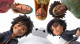

Завдання 1
Baymax
Baymax
Baymax
Baymax
Baymax
Baymax
Baymax
Завдання 2


Big Hero 6/ Місто Героїв
Завдання 3
Big Hero 6/ Місто Героїв
Про фільм
"Місто героїв"
(англ. Big Hero 6; букв. Укр. Велика шістка героїв)
- американський трьохвимірний комп'ютерний
повнометражний анімаційний фільм 2014 року, створений студією
"Walt Disney Animation Studios"
і випущений кінокомпанією
"Walt Disney Animation Studios".
Заснований на одноймених персонажах коміксів видатництва
Marvel,
але, незважаючи на це, істотно відрізняється від першоджерела.
Режисери - Дон Холл і Кріс Вільямс. Фільм удостоївся премії
"Оскар"
як кращий анімаційний повнометражний фільм.
Завдання 4
Big Hero 6/ Місто Героїв
Про фільм
"Місто героїв"
(англ. Big Hero 6; букв. Укр. Велика шістка героїв)
- американський трьохвимірний комп'ютерний
повнометражний анімаційний фільм 2014 року, створений студією
"Walt Disney Animation Studios"і випущений кінокомпанією
"Walt Disney Animation Studios".
Заснований на одноймених персонажах коміксів видатництва
Marvel,
але,
незважаючи на це, істотно відрізняється від першоджерела.
Режисери - Дон Холл і Кріс Вільямс. Фільм удостоївся премії
"Оскар"
як кращий анімаційний повнометражний фільм.
Завдання 5
Члени команди "Місто героїв"
- Хіро Хамада [en] (англ. Hiro Hamada)- головний герой мультфільму.
Юний геній робототехніки.У вільний час він конструює бойових роботів
і виставляє їх на підпільних боях в Сан-Франсокіо.
- Беймакс [en] (англ. Baymax)- другий головний герой мультфільму.
Надувний медичний робот, сконструйований Тадаші.
- Гого Томаго [en] (англ. GoGo Tomago)- Гого Томаго обожнює швидкість.
Вона відмінно складена, завжди зібрана і дуже віддана команді.
- Хані Лемон [en] (англ. Honey Lemon)- у хіміка-аматора Хані Лемон все йде на лад!
За зовнішністю модниці в стильних окулярах стоїть
цілеспрямована особа, девіз якої: «Неможливе можливо».
- Фред (Фредзілла) [en] (англ. Fred (Fredzilla))- на перший погляд
може здатися, що тюхтій і фанат коміксів Фред - ледар без мети в житті.
Він підробляє закликальником і «ходячою рекламою»,
однак цей хлопець просто чекає свого часу.
- Васабі [en] (англ. Wasabi)- прагне до абсолютної точності
і повсюдного порядку здоровань Васабі не може відмовити Хіро в
допомоги та приєднується до команди самопроголошених героїв.
Члени команди "Місто героїв"
- Хіро Хамада [en] (англ. Hiro Hamada)
- - головний герой мультфільму. Юний геній робототехніки.
У вільний час він конструює бойових роботів
і виставляє їх на підпільних боях в Сан-Франсокіо.
- Беймакс [en] (англ. Baymax)
- - другий головний герой мультфільму.
Надувний медичний робот, сконструйований Тадаші.
- Гого Томаго [en] (англ. GoGo Tomago)
- - Гого Томаго обожнює швидкість.
Вона відмінно складена, завжди зібрана
і дуже віддана команді.
- Хані Лемон [en] (англ. Honey Lemon)
- - у хіміка-аматора Хані Лемон все йде на лад!
За зовнішністю модниці в стильних окулярах стоїть
цілеспрямована особа, девіз якої: «Неможливе можливо».
- Фред (Фредзілла) [en] (англ. Fred (Fredzilla))
- - на перший погляд
може здатися, що тюхтій і фанат коміксів Фред - ледар без мети в житті.
Він підробляє закликальником і «ходячою рекламою»,
однак цей хлопець просто чекає свого часу.
- Васабі [en] (англ. Wasabi)
- - прагне до абсолютної точності
і повсюдного порядку здоровань Васабі не може відмовити Хіро в
допомоги та приєднується до команди самопроголошених героїв.
Завдання 6
Саундтреки
- «Immortals» Fall Out Boy
- «Hiro Hamada»
- «Nerd School»
- «Microbots»
- «Tadashi»
- «Inflatable friend»
- «Huggable Detective»
- «The Masked Man»
- «One of the Family»
- «Upgrades»
- «The Streets of San Fransokyo»
- «To the Manor Born»
- «So Much More»
- «First Flight»
- «Silent Sparrow»
- «Family Reunion»
- «Big Hero 6»
- «I Am Satisfied With My Care»
- «Signs of Life»
- «Reboot»
Завдання 7
Про фільм
"Місто героїв"
(англ. Big Hero 6; букв. Укр. Велика шістка героїв)
- американський трьохвимірний комп'ютерний
повнометражний анімаційний фільм 2014 року, створений студією
"Walt Disney Animation Studios"і випущений кінокомпанією
"Walt Disney Animation Studios".
Заснований на одноймених персонажах коміксів видатництва
Marvel,
але,
незважаючи на це, істотно відрізняється від першоджерела.
Режисери - Дон Холл і Кріс Вільямс. Фільм удостоївся премії
"Оскар"
як кращий анімаційний повнометражний фільм.
- Режисер
- Дон Холл
- Кріс Вільямс
- Продюсер
- Рой Конлі
- Джон Лассетер
- Автор сценарію
- Дон Холл
- Джордан Робертс